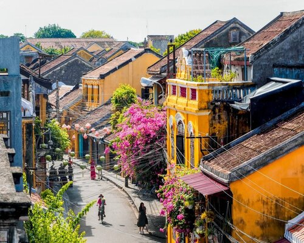

Hội An - Phố cổ đẹp như tranh vẽ
Chào mừng các bạn đến với bài viết hôm nay, chúng tôi sẽ cùng nhau khám phá một trong những điểm du lịch lý tưởng nhất tại Việt Nam - Phố cổ Hội An. Phố cổ Hội An, một ngôi thành cổ tuyệt vời nằm ven sông Thu Bồn, thuộc tỉnh Quảng Nam, là một trong những thành phố cổ được bảo tồn tốt nhất ở Đông Nam Á. Với kiến trúc cổ điển, những con đường nhỏ xinh, những ngôi nhà cổ lịch sự và các cây cầu gỗ độc đáo, Hội An là nơi lưu giữ những giai thoại lịch sử và văn hóa của Việt Nam.
Phố cổ Hội An nổi tiếng với lối kiến trúc độc đáo, một sự kết hợp tinh tế giữa nghệ thuật kiến trúc Á Đông và Á Châu. Điều này tạo nên không khí đặc trưng, làm cho mỗi góc phố, mỗi con đường trở nên trữ tình và huyền bí. Đến Hội An, du khách sẽ được trải nghiệm không gian yên bình, dễ chịu và tràn ngập sự giao thoa văn hóa. Khám phá Phố cổ Hội An không chỉ là việc ngắm nhìn các công trình kiến trúc độc đáo mà còn là cơ hội để thưởng thức ẩm thực truyền thống phong phú. Những quán cà phê cổ kính, những nhà hàng vỉa hè phục vụ đặc sản độc đáo của địa phương, tất cả đều làm cho hành trình du lịch trở nên trọn vẹn và không thể quên. Không chỉ là một bảo tàng sống về kiến trúc, Phố cổ Hội An còn là điểm đến lý tưởng cho những ai muốn tìm hiểu về lịch sử và văn hóa Việt Nam. Những lễ hội truyền thống như lễ hội trăng rằm, lễ hội ánh sáng mắt trời hay lễ hội hoa đèn đều là những sự kiện không thể bỏ qua khi đến với thành phố này. Hãy cùng chúng tôi bước chân vào Phố cổ Hội An để hiểu rõ hơn về sự đẹp đẽ và quyến rũ của nền văn hóa Việt Nam, nơi mà thời gian dường như đã ngừng lại để giữ lại những giá trị vô song. Hội An đích thực là một viên ngọc quý trong danh sách các điểm du lịch đặc sắc tại Đông Nam Á.